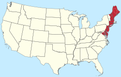

基列共和国
维基百科，自由的百科全书
| 本条目记述一个正在发生的事件。随着事件发展，内容可能迅速变化，初期报道亦可能不可靠。 |
| 本条目的中立性有争议。请参见讨论页。（2009年10月） |
| 基列神权共和国 Divine Republic of Gilead | |
 国旗 | |
 基列实际控制区（红色），2009年11月 | |
| 格言 | “在祂眼下”（Under His Eye） |
|---|---|
| 首都 | 华盛顿哥伦比亚特区（宣称）；部分部门迁往剑桥 |
| 最大城市 | 纽约市 |
| 官方语言 | 英语（事实上） |
| 政体 | 神权政治、军政府 |
| 临时最高委员会主席 | B·弗雷德里克·贾德（B. Frederick Judd） |
| 委员会主要成员 | 弗雷德里克·R·沃特福德（Frederick R. Waterford） 约瑟夫·劳伦斯（Joseph Lawrence） |
| 立法机关 | 无（由“雅各之子委员会”以敕令治理） |
| 成立 | |
| - 总统日大屠杀 | 2009年2月16日 |
| - 紧急状态 | 2009年2月17日 |
| - 电子卡冻结 | 2009年3月 |
| - 宣布成立 | 2009年4月 |
| - 攻占纽约市 | 2009年6月 |
| 面积 | |
| - 估计 | 约124,500 平方公里（48,100 平方英里）（实际控制区，估计）；宣称的116个县共195,900 平方公里（75,660 平方英里） |
| 人口 | |
| - 估计 | 约3,900万（按现辖县份，以美国人口普查局危机前数据推算）；宣称县份合计4,535万（2008年7月估计）；实际人口因逃亡与“安置”大幅减少，无可靠统计 |
| 货币 | 美元（流通中）；政府推行“电子卡”（Compucard）账户系统 |
| 时区 | 北美东部时区（UTC−5） |
| 电话区号 | 无（国际线路中断） |
| 互联网顶级域 | 无（自2009年5月起区内.gov、.us地址无法访问） |
基列共和国（英语：Republic of Gilead），官方自称基列神权共和国（Divine Republic of Gilead），是2009年4月在华盛顿哥伦比亚特区宣布成立的一个政权，由在总统日大屠杀后接管联邦首都的军事—宗教团体“雅各之子”领导。截至2009年11月，基列实际控制美国东北部沿95号州际公路的城市带，从弗吉尼亚州北部经巴尔的摩、费城、纽约市延伸至波士顿都会区，以及新英格兰的大部分地区，另在缅因州北部、新罕布什尔州和佛蒙特州东北部设有三个单独管理的分区。
基列政权未获联合国任何成员国承认。美国联邦政府（萨克拉门托）、加拿大、欧洲联盟视其为非法占领当局。圣座则在其将天主教列为“敌对教派”后召回驻华盛顿教廷大使。
由于基列不允许外国记者入境，并切断了国际电话线路，外界所知的情况大多来自难民证词、偷带到加拿大的文件以及对其广播的监听，下文不少细节仍有争议。
目录[隐藏] |
[编辑]名称
“基列”（Gilead）一词出自《希伯来圣经》中约旦河以东的基列地区，《耶利米书》8:22 有“在基列岂没有乳香呢？在那里岂没有医生呢？”之句。[1]该名称最早出现在2006年至2007年间“雅各之子”相关团体内部流传的油印小册子中。[2]
基列自己的广播交替使用“基列共和国”、“基列”，敕令中则用“神权共和国”。据在新不伦瑞克省接受访问的难民说，“在祂眼下”在基列控制的城镇里被当作日常的见面和告别用语。
[编辑]历史
[编辑]背景
2003年至2008年间，美国及多数工业化国家出生率持续下降。美国疾病控制与预防中心2006年起在报告中使用“出生荒”（Birth Dearth）一词。[3] 同期出现多起梅毒抗药菌株（媒体称“R型梅毒”）疫情以及化学污染、核电站事故恐慌，进一步加剧了社会不安。
“雅各之子”是2005年前后成形的一批保守派智库与教会网络的统称，主张以“恢复传统家庭秩序”应对生育危机。其成员包括退役军官、私人安保公司人员与若干州议员，但2009年以前在全国政坛影响有限。[4]据《大西洋月刊》报道，该网络自2006年起在北弗吉尼亚和马里兰州租用会议中心举行闭门会议，会上传阅过题为“作为国家资源的可生育女性”的立场文件。[来源请求]
[编辑]总统日大屠杀
2009年2月16日（总统日），白宫遭炸弹袭击；同日，美国国会为听取总统关于“国家生育紧急状态”的演说召开联席会议时，遭武装人员扫射。总统、副总统及大多数在场议员遇难。袭击最初被归咎于“伊斯兰狂热分子”，但此说法至今未经任何独立调查证实。[5]当晚，指定幸存者、司法部长雷蒙德·E·卡洛韦（Raymond E. Calloway）在未公开地点宣誓就任代理总统，并于3月初将联邦政府迁至萨克拉门托。
2月17日，驻华盛顿军方宣布全国紧急状态，“暂时中止”美国宪法，实施宵禁、新闻审查，并开始发放身份通行证（Identipass）。BBC5月报道称，在2月17日宣言上签字的几名军官后来被确认是“雅各之子”学习小组的成员。[5]
[编辑]电子卡冻结
2009年3月，临时当局冻结所有女性名下的银行账户与电子卡，将资金转归其丈夫或男性近亲，并以命令解除女性的就业。美联社报道，命令在3月9日至10日夜间生效，第二天早上华盛顿和巴尔的摩的女性在商店刷卡时被拒。[6]萨克拉门托政府于3月23日宣布该指令无效，但在华盛顿当局控制银行的地方，指令仍被执行。
波士顿与华盛顿的抗议游行遭到开枪镇压。[7]3月20日，军队在波士顿博伊尔斯顿街向游行者开枪，死亡人数至今不明，目击者向《波士顿环球报》提供的数字从“十几个”到四十多人不等。[8]
[编辑]宣布成立与“战争”
2009年4月，临时政府在华盛顿宣布成立基列共和国，并宣布贵格会、天主教与浸信会为“敌对教派”。多数来源把宣布日期定为4月7日，宣言是在原WTOP电台播出的；也有难民称是前一天。[来源请求]春夏两季，基列在两条战线上作战，其广播将之合称为“战争”（the War）。
[编辑]阿巴拉契亚战线
西线的基列部队号称第四师“天启天使”（Angels of the Apocalypse）（与美国陆军第4步兵师无关）。4月下旬起，他们在阿巴拉契亚山脉与浸信会武装交战，最早是在劳登县以西的蓝岭山口。[9]到8月，战线大致稳定在劳登县与克拉克县的县界及蓝岭山脊一线。双方的伤亡数字均无法核实。
基列广播还声称有部队5月在底特律作战，但该地区目前处于无线电静默区内，多数分析人士视之为宣传。
[编辑]沿95号州际公路北进
另一路部队沿95号州际公路北上。根据通讯社报道，大致经过如下：
- 4月下旬：控制巴尔的摩。米德堡和阿伯丁试验场据称未经战斗即倒向基列。[来源请求]
- 5月9日—16日：费城及周边战斗。路透社报道5月11日在费城国际机场附近的I-95上出现装甲车。[10]
- 5月下旬：沿新泽西收费公路推进，占领特伦顿。
- 5月29日—6月21日：纽约市之战。基列部队从史泰登岛和李堡渡河，6月4日乔治·华盛顿大桥上层发生爆炸后封闭。国民警卫队第42步兵师一部守住布朗克斯部分地区至6月中旬。[11]6月21日曼哈顿被宣布“平定”。有估计称战斗期间逃离纽约的人超过150万。[来源请求]
- 7月：占领长岛，沿I-95经纽黑文东进，7月14日占领普罗维登斯。
- 7月18日—26日：波士顿。汉斯科姆空军基地约在7月22日失守。占领后，若干部门迁入剑桥哈佛大学的建筑。
- 8月初：波士顿以南的推进在福克斯伯勒、曼斯菲尔德一带的诺福克县与布里斯托尔县交界处停止，与黑水公司安全特许区相遇。
[编辑]缅因州北部与东北王国
基列在新英格兰北部的控制基本上没有经过战斗。8月，班戈和普雷斯克艾尔的教会议会宣布支持“华盛顿临时当局”，《班戈每日新闻》8月14日报道，前一天有一支车队经I-95开进班戈。[12]此后几周内设立了“阿鲁斯图克边区”和“佩诺布斯科特圣约区”。8月下旬基列部队到达边境上的霍尔顿。在佛蒙特州的东北王国，基列于9月初占领圣约翰斯伯里，连带控制了德比莱恩的91号州际公路口岸。
[编辑]“含的子孙”安置
2009年7月，基列宣布将“含的子孙”迁往北达科他州所谓“第一民族家园”（National Homeland One）。BBC监听部监听到的第一次相关广播是在7月22日，称安置“正按计划进行”，“每天三千人”。[13]美国公民自由联盟及多个国际人权组织称之为对非裔美国人的强制驱逐，8月4日联合国人权事务高级专员要求基列停止。[14]
难民描述了在巴尔的摩、费城和纽瓦克的围捕，以及迪克斯堡的一处拘留营。北达科他州不在基列控制下，当地官员表示从未有这样的列车到达。
[编辑]犹太人“遣返”
基列同时对犹太人推行“遣返”计划，据报道当事人须在改宗与移居以色列之间选择。基列电台10月称已有19,000人离境，以色列移民吸收部10月20日表示，在海法登记的来自基列港口的抵达者约6,800人，两者相差甚大。[15]“大西洋黎明”号（Atlantic Dawn）载约400名乘客，9月在亚速尔群岛以西失踪。[16]
[编辑]与东北邻区的关系
马萨诸塞州东南部以及罗得岛州的布里斯托尔县、纽波特县目前由黑水公司安全特许区控制，与基列在I-95以南沿线对峙。两者之间没有已知的协议。
佛蒙特共和国与绿山共和国拒绝承认基列在佛蒙特东北三县的管辖。佛蒙特共和国9月封闭了丹维尔以东的2号美国国道。
[编辑]地理
基列的领土分为差别很大的两部分。南部核心是波士华（Northeast megalopolis）城市带，沿I-95和东北走廊铁路，从波托马克河一直到波士顿盆地。基列还宣称拥有德尔马瓦半岛和弗吉尼亚州东岸、新泽西州和康涅狄格州全境，以及佩诺布斯科特区以南的缅因州。对马萨诸塞州西部农村和缅因州内陆的控制据说只限于主要道路和较大城镇。
北部是三个人口稀少的分区，由华盛顿单独管理，基列广播称之为“边区”或“圣约区”。
[编辑]人口
下表按州列出基列宣称地区的县数及美国人口普查局2008年7月的估计人口。[17]这些都是危机前的数字，现有人口不详。按2000年美国人口普查，同一地区共有43,393,408人。
| 州（控制部分） | 县数 | 2008年7月估计人口 |
|---|---|---|
| 哥伦比亚特区 | 1 | 590,074 |
| 弗吉尼亚州（北弗吉尼亚、东岸） | 10 | 2,152,374 |
| 马里兰州 | 18 | 4,226,116 |
| 特拉华州 | 3 | 876,211 |
| 宾夕法尼亚州（费城及四个郊县） | 5 | 3,991,897 |
| 新泽西州 | 21 | 8,663,398 |
| 纽约州（纽约市、长岛、韦斯特切斯特、罗克兰） | 9 | 12,461,962 |
| 康涅狄格州 | 8 | 3,502,932 |
| 罗得岛州（普罗维登斯、肯特、华盛顿） | 3 | 922,925 |
| 马萨诸塞州（东南部除外） | 9 | 5,254,867 |
| 新罕布什尔州（库斯县除外） | 9 | 1,289,955 |
| 缅因州（南部及中部） | 13 | 1,081,607 |
| 基列本部小计 | 109 | 45,014,318 |
| 北部三个分区 | 7 | 333,981 |
| 宣称总计 | 116 | 45,348,299 |
[编辑]北部分区
- 阿鲁斯图克边区（Aroostook March）：即阿鲁斯图克县，首府普雷斯克艾尔，以种植马铃薯为主。1994年关闭的洛林空军基地据说被基列用作仓库。[来源请求]
- 佩诺布斯科特圣约区：佩诺布斯科特县和皮斯卡塔奎斯县，首府班戈。班戈国际机场据报已作军用。
- 东北王国区：佛蒙特州的奥尔良县、喀里多尼亚县、埃塞克斯县和新罕布什尔州的库斯县，首府圣约翰斯伯里。
[编辑]政治
基列目前没有成文宪法。权力集中于“雅各之子委员会”，以敕令（edict）治理。广播称B·弗雷德里克·贾德为临时最高委员会主席，他只公开露面过寥寥几次，也没有任何公开的生平资料。据《环球邮报》的消息来源，弗雷德里克·R·沃特福德负责服装规定和公开仪式；[谁？]约瑟夫·劳伦斯则被认为是经济计划和称为“殖民地”（the Colonies）的劳动营的主持者。[18]
据流出的内部文件，社会按男性职衔（“大主教”、“卫士”、“天使”）与女性角色分级。[18]加拿大难民机构收集的证词大致描述如下，各人说法对名称和含义并不完全一致：
- 大主教（Commanders）：高级官员。
- 天使（Angels）为前线士兵；卫士（Guardians）为警察和家庭守卫；眼目（Eyes）为秘密警察，难民说他们使用黑色厢式车。
- 夫人（Wives）、经济太太（Econowives）。
- 使女（Handmaids）：生育过子女的女性，被分配到大主教家中为其生育。基列广播从未使用过这个词。
- 马大（Marthas）为家仆；嬷嬷（Aunts）负责训练和监管使女；非女人（Unwomen）据说被送往殖民地。
有报道称波士顿曾进行公开处决，难民称之为“挽救仪式”（Salvaging），尸体据说被挂在哈佛园的围墙上。[来源请求]
[编辑]宗教
4月的宣言将贵格会、天主教和浸信会列为敌对教派。浸信会的处境比较混乱：基列在阿巴拉契亚与浸信会游击队作战，但缅因州北部分区的建立却得到了当地福音派和独立浸信会教会的帮助。几名难民对CBC说，在阿鲁斯图克县，是否属于“认可的会众”决定了能否领到配给卡。[19]
[编辑]“地下女性铁路”
难民和加拿大救援人员描述了一个逃亡网络，称为“地下女性铁路”（Underground Femaleroad）。基列广播称之为“贵格会叛徒”所为；据BBC报道，6月至少有11人在费城因“走私女性”被绞死。[5]
已知路线之一是经缅因州西部森林到杰克曼，沿201号美国国道越境到魁北克。有难民还提到一个名为“五月天”（Mayday）的武装抵抗组织，但对其一无所知。
[编辑]难民
加拿大关闭了与基列控制区之间的全部口岸，但开放了难民通道。据加拿大公民及移民部，截至2009年10月31日，在加拿大登记的来自基列控制区的人数为212,400人，其中魁北克省88,600人、新不伦瑞克省71,300人、安大略省39,900人、新斯科舍省12,600人。[20]联合国难民署10月称，实际人数可能“接近30万”。[21]成年抵达者中约三分之二是女性。
[编辑]经济
| 此章节需要扩充。您可以通过编辑来帮助扩充此章节。 |
可靠资料很少。据报道纽瓦克—伊丽莎白港和巴尔的摩港的集装箱运输基本停止，东北走廊铁路用于军事运输。女性不得持有财产或金钱，所有工资都打入男性的电子卡账户。
[编辑]旗帜
国旗于2009年5月首次出现在华盛顿的影像中，保留了美国国旗的十三道红白条纹，左上角蓝底上是一圈白星环绕的上帝之眼。
[编辑]国际反应
 美国联邦政府：称基列为“在联邦首都非法夺权的叛乱集团”，3月23日宣布电子卡指令无效。
美国联邦政府：称基列为“在联邦首都非法夺权的叛乱集团”，3月23日宣布电子卡指令无效。- 加拿大：关闭与基列控制区之间的全部口岸，开放难民通道，不与基列官员打交道。
 欧洲联盟：7月27日冻结与基列有关人员的资产并禁止其入境。[22]
欧洲联盟：7月27日冻结与基列有关人员的资产并禁止其入境。[22] 墨西哥：未表态；见2009年墨西哥对新墨西哥州的干预。
墨西哥：未表态；见2009年墨西哥对新墨西哥州的干预。- 以色列：接收来自基列港口的犹太人，要求就失踪乘客作出交代。[15]
- 圣座：在天主教被列为敌对教派后召回驻华盛顿大使。
- 联合国：人权事务高级专员8月4日谴责“安置”行动。[14]安理会未通过任何决议。
- 俄罗斯、中国：称事件属美国内政，反对安理会采取行动。[来源请求]
[编辑]参见
[编辑]参考资料
- ^ 《圣经》（和合本）. 耶利米书 8:22. （英文）
- ^ "'Gilead' pamphlets circulated in Virginia churches". Richmond Times-Dispatch. 2007-11-03. （英文）
- ^ "Fertility in the United States: Birth Dearth Update". CDC Data Brief. 2006. （英文）
- ^ Marsh, Allen. "Who are the Sons of Jacob?". The Atlantic. 2009-03-02. （英文）
- ^ "Unanswered questions over February 16 attacks". BBC News. 2009-05-11. （英文）
- ^ Kessler, Ruth. "Emergency order freezes women's bank accounts". Associated Press. 2009-03-10. （英文）
- ^ "Troops fire on marchers in Boston". Reuters. 2009-03-21. （英文）
- ^ Doyle, Patrick. "Witnesses describe shooting on Boylston Street". The Boston Globe. 2009-03-22. （英文）
- ^ Rhodes, Calvin. "Fighting reported at Blue Ridge passes". McClatchy Newspapers. 2009-06-03. （英文）
- ^ "Armoured column enters Philadelphia". Reuters. 2009-05-12. （英文）
- ^ Ostrowski, Dana. "Guard troops pull back from the Bronx". The New York Times. 2009-06-18. （英文）
- ^ "Convoy reaches Bangor; churches back 'provisional authority'". Bangor Daily News. 2009-08-14. （英文）
- ^ "Gilead radio: 'Children of Ham' resettlement under way". BBC Monitoring. 2009-07-23. （英文）
- ^ "UN rights chief condemns 'resettlement' in North Dakota". AFP. 2009-08-04. （英文）
- ^ Levin, Yael. "Absorption Ministry: 6,800 arrived from Gilead ports". Haaretz. 2009-10-20. （英文）
- ^ "Search called off for missing ship off Azores". The Jerusalem Post. 2009-09-23. （英文）
- ^ U.S. Census Bureau, Population Division. "Annual Estimates of the Resident Population for Counties: April 1, 2000 to July 1, 2008" (CO-EST2008-01). 2009年3月. （英文）
- ^ "Leaked papers describe Gilead's 'household' ranks". The Globe and Mail. 2009-10-12. （英文）
- ^ "Thousands cross into New Brunswick at Houlton". CBC News. 2009-08-27. （英文）
- ^ "Update on arrivals from the northeastern United States". Citizenship and Immigration Canada（新闻稿）. 2009-11-02. （英文）
- ^ "Briefing notes: displacement from the northeastern United States". UNHCR, Geneva. 2009-10-16. （英文）
- ^ "Council adopts restrictive measures against the de facto authorities in Washington". Council of the European Union（新闻稿）. 2009-07-27. （英文）
[编辑]外部链接
- （已失效）基列临时委员会官方网站